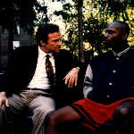

Contents | Features | Reviews | News | Archives | Store |
 |
|
| Movie Credits | Buy It! |
Clockers
Review by Carrie Gorringe
|  | Directed by Spike Lee. Starring Harvey Keitel, |
In the 1993 novel, Clockers (a street term for young drug dealers who operate around the clock), author Richard Price portrayed a world of extreme moral ambiguity, one in which the effects of institutionalized discrimination and a lack of personal inner resources leave individuals not only at the mercy of their own worst impulses but also of the impulses of those around them. Price understood, as few people have, then or now, that regardless of what stance an individual living in such an environment takes -- whether to deal drugs and take the so-called "easy way out," or to struggle toward some semblance of upward mobility through simultaneous employment at several low-wage jobs -- the net result is still the same: extreme psychological wear-and-tear, resulting in frustration and rage. The only difference between the two worlds, as suggested in the novel, is the length of time one might have to suffer; it might take two years or twenty, depending upon the choice one makes. So, under the circumstances, certain inner-city youth, perceiving either rightly or wrongly no opportunities to utilize their talents, might understandably opt to "live fast, die young and have a good-looking corpse" (although, as the series of grisly crime-scene photographs in the opening title sequence suggests, only the first two-thirds of this trinity are possible under the best of circumstances). The quote, taken from Nicholas Ray's 1949 film, Knock on Any Door, was spoken by another dispirited youth on trial for murder, this time a white youth who was unable to find a place in society and so turned to crime. With these two fictional examples of the socio-economically dispossessed acting as stand-ins for their real-life counterparts forty years apart in time, the prospect of controlling crime in any significant fashion, now if not then, appears to be bleak, to say the least.
Spike Lee's film version of Price's novel retains much of the novel's essence, as it follows clocker Ronald "Strike" Dunham (Phifer) through a series of personal and professional trials and tribulations. Strike is facing a real dilemma not unlike that faced in the corporate world; in order to get ahead, he has to accomplish a task that he would rather not perform: firing a dishonest subordinate for his boss. In Strike's case, however, the firing has to take a much more literal form. Unable to commit the killing, he runs into his long-suffering older brother, Victor (Washington), who eschewed the lure of the drug trade. Victor has also distinguished himself from his brother in that Victor has not abandoned the ethical codes that include personal responsibility for one's family. Victor supports his wife and children through multiple and menial forms of employment. Strike, meanwhile, is estranged from his mother, who disapproves of his drug dealing. Nevertheless, Victor promises Strike that "my man" will take care of the situation for him. When the subordinate ends up dead, Victor gives himself up to the police, claiming the murder was committed in self-defense. However, the detectives investigating the case have divided opinions: Larry Mazilli (Turturro) believes that Victor is guilty, whereas Rocco Klein (Keitel) "instinctively" feels that because Victor is, in Klein's words, "one of the good ones," Strike is the guilty party who simply needs a little "creative" persuasion in order to make him confess, even if that persuasion takes the form of setting him up as a stoolie in the eyes of his boss, Rodney (Lindo).
So, given the fact that this film comes with a number of built-in pedigrees (literary source, screenwriters and filmmaker) for which most Hollywood producers would sell their souls to possess individually, never mind collectively, what type of film is Clockers? Problematic is perhaps the best assessment. Obviously it is difficult to distill more than the most basic elements of a 600-plus-page novel into a two hour film. In spite of this daunting task, Lee, to his credit, manages to capture the contradictory impulses that rule the lives of people in the inner cities, the assumptions and prejudices (of all stripes) that those who live in this atmosphere, as well as those who merely interact within it, hold (witness Klein's assessment of Victor as being incapable of murder because he holds the same middle-class values as Klein; his behavior is an inversion of the corrupt police chief Hank Quinlan in Welles' crime classic, Touch of Evil (1958), who arrested people because he had a "hunch" that they were guilty). In addition, Malik Hassan Sayeed's cinematography is absolutely breathtaking; the blood seems to leap off the screen with a most sinister vermilion hue.
Unfortunately, it seems that, in the adaptation of the novel into a screenplay, neither Lee nor Price had enough faith in their ability to transfer the novel's deglamorization of drug dealing to the screen. The result is an excessively didactic tone which at times is almost hysterically funny, and it tends to undercut any serious message that the film might have to impart. As the film insists upon driving home ad nauseam the point that drugs are evil with a capital "E," one wonders if he and Price wrote the screenplay with Bob Dole holding a gun to their heads. No doubt the recent attacks by Senator Dole and others upon Hollywood's presumed monopoly on moral turpitude have made filmmakers more skittish. Nevertheless, so much "message" was being imposed upon the audience that halfway through the film I was reminded of producer Samuel Goldwyn's immortal line, "If you want to send a message, call Western Union." One scene in particular is especially annoying in this regard: when Klein is interrogating a young boy charged with murdering one of Rodney's associates -- not so much an interrogation as Klein instructing this nice young boy in what to say in order to avoid a murder charge -- Lee cannot resist placing Klein in a flashback sequence with Klein commenting upon and implausibly appearing within the flow of events; moreover, Klein directly addresses the audience while droning on and on in an insufferably patronizing tone. The overall effect of the scene was so foolish that it looked as if it belonged more to a Frank Tashlin film than to one directed by Spike Lee. It's the sort of visual pretentiousness that merely looks cartoonish, instead of sophisticated, and detracts from the more tragic specter of a twelve-year-old boy being charged with murder because he feels obligated to live according to the twisted logic of the urban jungle. Moreover, the script is so limited in background detail that it is difficult for the audience to understand exactly what motivates these characters without having read the book beforehand. As a result, all of the characterizations are one-dimensional (although Turturro suffers the most in this regard) and therefore the much-vaunted acting style in Clockers is not so much a style as it is a valiant struggle to achieve any sort of quality performance under the circumstances.
The film version of Clockers will probably not influence life in the inner cities or cinema history to any great extent. In a Q and A session conducted over the Microsoft Network last year in conjunction with the U.S. release of the film, Lee confided that Clockers would be his first and last urban gangster film because he believed that the genre was "dead." Notwithstanding the difficulty of predicting the death of a genre (the western, for example, seems stubbornly resistant to repeated warnings of its impending extinction, rising up just often enough and with sufficient force to thwart its would-be eulogists), Lee would bear some personal responsibility if reports of the death of the urban gangster film did not turn out to be greatly exaggerated.
Contents | Features | Reviews | News | Archives | Store
Copyright © 1999 by Nitrate Productions, Inc. All Rights Reserved.